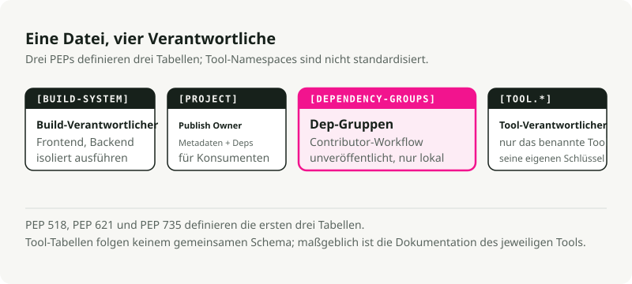
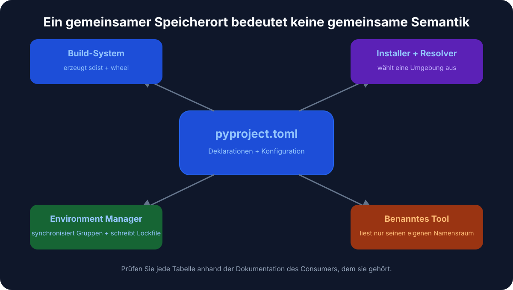
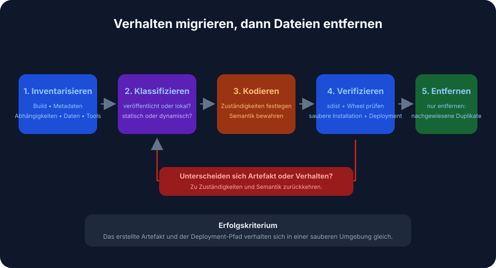

Automatische Übersetzung
Dieser Artikel wurde automatisch aus der englischen Originalversion übersetzt.
pyproject.toml-Leitfaden: Python-Paketierung, Abhängigkeiten und Tool-Konfiguration
Wenn du schon einmal ein Python-Projekt geöffnet und versucht hast herauszufinden, wo Abhängigkeiten, Build-Einstellungen und Tool-Konfigurationen eigentlich liegen, kennst du das Problem. setup.py, setup.cfg, requirements.txt, MANIFEST.in, dazu noch eine Handvoll Dotfiles für jeden Linter und Formatter — alle lesen aus unterschiedlichen Quellen.
pyproject.toml bündelt den Großteil davon in einer einzigen Datei.
TL;DR
pyproject.toml ist grob das package.json für Python. Eine Datei enthält Projektmetadaten, Abhängigkeiten und Tool-Einstellungen. Egal ob du .venv, pyenv oder uv verwendest: Wenn alles hier steht, werden Setup und Zusammenarbeit einfacher.
Was ist pyproject.toml?
Es ist eine Konfigurationsdatei im Wurzelverzeichnis deines Python-Projekts, geschrieben in TOML (denk an INI-Dateien, aber mit echter Spezifikation). Zwei PEPs haben geprägt, was sie heute leistet:
- PEP 518 (2016) führte die Tabelle
[build-system]ein, damit Build-Tools ihre Anforderungen standardisiert deklarieren können. - PEP 621 (2020) ergänzte die Tabelle
[project]für zentrale Paketmetadaten: Name, Version, Abhängigkeiten und Ähnliches.
Heute liest der Großteil des Python-Toolings (Black, isort, pytest, Ruff, mypy) seine Konfiguration aus [tool.*]-Abschnitten in dieser Datei.

Warum das wichtig ist
Weniger Dateien, die du durchsuchen musst
Ein typisches Legacy-Projekt jonglierte mit setup.py, setup.cfg, requirements.txt, MANIFEST.in und einer ganzen Herde von Dotfiles (.flake8, .coveragerc und ähnlichen). Das meiste davon landet an einer einzigen Stelle.
Backend-agnostische Builds
Wenn du pip install . ausführst, liest pip pyproject.toml und installiert genau die Build-Tools, die dein Projekt braucht: setuptools, flit, hatchling — ganz wie du willst. Du bist nicht mehr an setuptools gebunden.
Eine zentrale Stelle für Tool-Konfiguration
Linter, Formatter, Test-Runner und Type-Checker wissen alle, dass sie hier nachsehen müssen. Deine IDE, deine CI-Pipeline und deine Teamkollegen lesen aus derselben Datei.

Aufbau einer pyproject.toml
Eine typische Datei hat drei Hauptabschnitte:
# 1. Build system - tells pip/build how to package your project
[build-system]
requires = ["hatchling"]
build-backend = "hatchling.build"
# 2. Project metadata and dependencies
[project]
name = "awesome-app"
version = "0.1.0"
description = "Short demo of pyproject.toml"
readme = "README.md"
requires-python = ">=3.12"
dependencies = [
"fastapi>=0.111",
"uvicorn[standard]>=0.30",
]
# Expose CLI commands
[project.scripts]
awesome-cli = "awesome_app.cli:main"
# Optional dependencies (e.g., for development)
[project.optional-dependencies]
dev = ["pytest", "ruff", "mypy"]
# 3. Tool configuration
[tool.ruff]
line-length = 100
target-version = "py312"
[tool.pytest.ini_options]
addopts = "-ra -q"
testpaths = ["tests"]
Aufgeschlüsselt
[build-system]
Erforderlich, wenn du dein Projekt paketieren oder verteilen willst. Sagt pip und Build-Tools (wie python -m build), welches Backend verwendet werden soll.
[project]
Die Metadaten deines Pakets. Hier liegen die Abhängigkeiten statt in requirements.txt.
dependencies: die Laufzeitabhängigkeiten deines Pakets.optional-dependencies: Gruppen zusätzlicher Abhängigkeiten (dev,test,docs).scripts: erstellt ausführbare Kommandos. Im obigen Beispiel liefert die Installation des Pakets einawesome-cli-Kommando, das die Funktionmaininawesome_app/cli.pyausführt.
[tool.*]
Konfiguration für jedes Tool, das dies unterstützt. Jedes Tool hat seinen eigenen Namespace: [tool.pytest.ini_options], [tool.mypy], [tool.ruff] und der Rest.
Ersetzt es requirements.txt?
Für moderne Workflows: ja. Tools wie Poetry, PDM, Hatch und uv speichern Abhängigkeiten direkt im Abschnitt [project] und erzeugen Lockfiles für Reproduzierbarkeit.
Du willst requirements.txt wahrscheinlich trotzdem behalten, wenn:
- Du mit einem Legacy-Deployment-System arbeitest, das es erwartet.
- Du ein CI-Skript hast, das noch nicht aktualisiert wurde.
Die meisten modernen Tools können bei Bedarf eines aus deiner pyproject.toml exportieren:
uv export > requirements.txt
Auswahl eines Build-Backends
Das Build-Backend ist eine der verwirrenderen Entscheidungen. Hier ein kurzer Vergleich:
| Backend | Am besten für | Vorteile | Nachteile |
|---|---|---|---|
| Hatchling | Moderner Standard | Schnell, erweiterbar, unterstützt Plugins | Neuer, weniger Legacy-Support |
| Flit | Einfache Pakete | Extrem einfach, keine Konfiguration nötig | Nicht für komplexe Builds (C-Erweiterungen) |
| Setuptools | Legacy, komplex | Unterstützt alles (C-Erweiterungen usw.) | Langsamer, mehr Konfiguration |
| Poetry | Poetry-Nutzer | In das Poetry-Ökosystem integriert | An den Poetry-Workflow gebunden |
Für neue Pure-Python-Projekte ist Hatchling ein vernünftiger Standard. Genau das schreibt uv init für dich.
Migration eines bestehenden Projekts
Wenn du ein Legacy-Python-Projekt hast, kannst du es so modernisieren:

- Füge
[build-system]hinzu. Wenn du nicht sicher bist, welches Backend du verwenden sollst, starte mitrequires = ["setuptools>=61", "wheel"]. - Verschiebe Metadaten nach
[project]. Übertrage Name, Version und Abhängigkeiten aussetup.pyodersetup.cfg. - Konvertiere Entwicklungsabhängigkeiten. Lege sie in
[project.optional-dependencies].devab. - Konfiguriere Tools. Füge
[tool.*]-Abschnitte für Black, pytest, mypy usw. hinzu. - Entscheide, was mit
requirements.txtpassieren soll. Entweder weglassen oder aus deinem Lockfile für Legacy-Systeme erzeugen, die es brauchen.
Nach der Migration kannst du setup.py, setup.cfg und die meisten dieser Konfigurations-Dotfiles in der Regel löschen.
Ein paar nützliche Funktionen
CLI-Entry-Points
Statt des alten console_scripts-Blocks in setup.py verwendest du [project.scripts]:
[project.scripts]
my-tool = "my_package.main:run"
Wenn jemand dein Paket installiert, kann er my-tool in sein Terminal eingeben.
Workspaces (Monorepos)
Tools wie uv und hatch unterstützen Workspaces, mit denen du mehrere Pakete in einem einzigen Repo verwalten kannst:
[tool.uv.workspace]
members = ["packages/*"]
Du kannst mehrere voneinander abhängige Pakete entwickeln und sie alle zum Testen in eine gemeinsame virtuelle Umgebung installieren.
Typische Workflows mit uv
Ein neues Projekt starten
uv init my_app # creates folder with pyproject.toml and .venv
cd my_app
uv add requests fastapi # adds to [project.dependencies] and installs
uv run pytest # runs tests in the venv
Skripte ausführen
Du kannst entweder Skripte in pyproject.toml definieren (mit einem Task-Runner wie poe oder hatch) oder einfach uv run aufrufen:
uv run python main.py
Praktische Tipps
- Pinne in Libraries keine exakten Versionen fest. Verwende Bereiche wie
requests>=2.30, damit deine Library nicht mit anderen installierten Paketen in der Umgebung kollidiert. - Pinne Versionen in Anwendungen fest. Verwende ein Lockfile (
uv.lock,poetry.lock) für reproduzierbare Builds. - Gruppiere Entwicklungsabhängigkeiten. Halte Abhängigkeiten für Tests, Linting und Dokumentation in getrennten optionalen Gruppen (
dev,test,docs). - Packe nicht jede Option in
pyproject.toml. Bleib bei projektweiten Standards und überlass toolspezifischen Konfigurationsdateien den Rest, wenn es unübersichtlich wird.
Der eigentliche Gewinn von pyproject.toml ist vor allem, kleine tägliche Reibung zu beseitigen. Du musst nicht mehr suchen, welche Datei für den Build zuständig ist. Die Linter-Konfiguration liegt direkt neben den Abhängigkeiten. Pip und deine IDE sind sich endlich einig, was installiert ist. Wähle ein Build-Backend, lege deine Abhängigkeiten in [project] ab und lass deine Tools alles aus einer einzigen Quelle lesen. Wenn du ganz neu startest, bringt dich uv init mit einem einzigen Kommando schon fast ans Ziel.